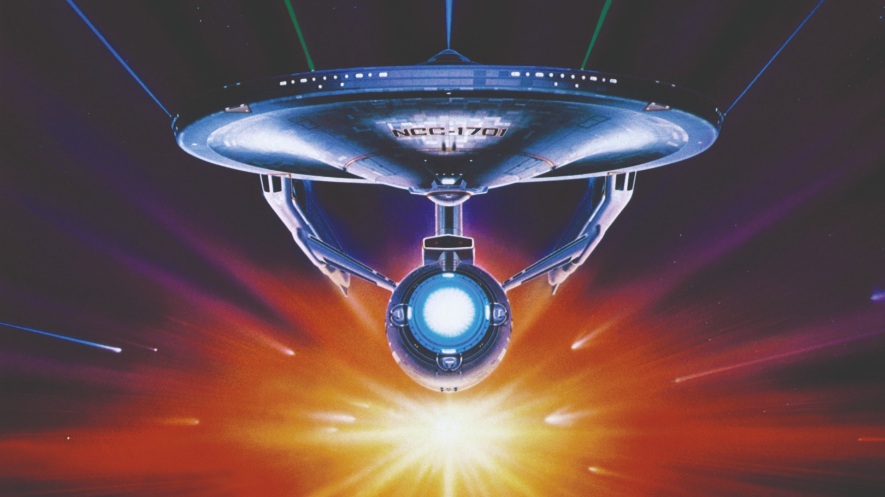

What is Sci-Fi?
Sci-Fi is about exploring our relationships to advances in technology and how percieved progress affects human beings.
My Favorite Sci-Fi Movies
- Star Wars: A New Hope
- Star Trek II: The Wrath of Kahn
- Back to the Future
Best Rated Sci-Fi Movies
- Interstellar
- Dune (2021)
- Frankenstein
See the Wikipedia page for Sci-Fi here!